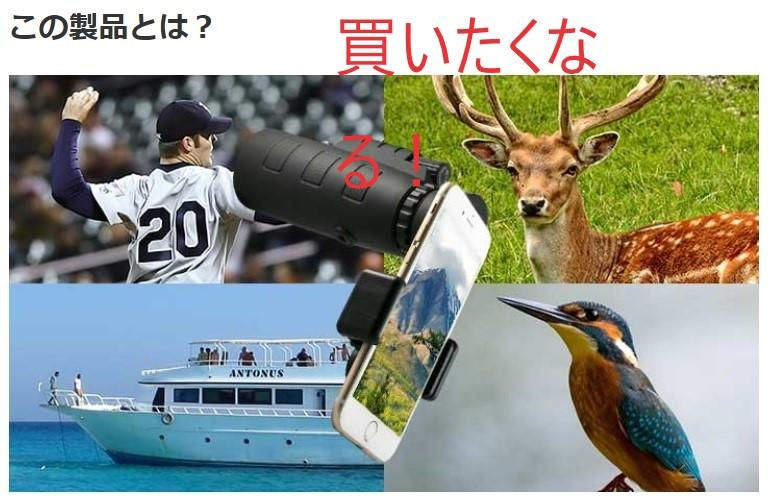
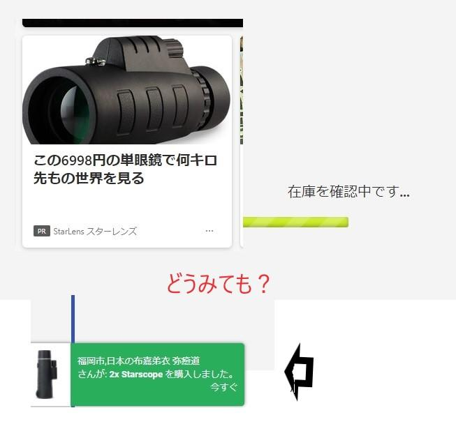

うるがいの話 ある日
最新: 三日月うるがいとは 前提知識です
カニの画像をクリックすると『うるがいの話』サイトを表示します|
|
【うるがいの話】 うるがい(ｳﾙｶﾞｲ urugai)とは、『もずくがに』の名前でとても大きくなります。 |
|---|---|
|
|
【Got cat カミマヤーの話】 たながー（ﾀﾅｶﾞｰtanagaa）とは手長えびのことで、何種類かあり大きいのは車 エビぐらいになります。 |

|
【ぶながぁの話】 ぶながー(bunagaa)とは、赤い髪の毛、赤い身体、そして身長は１ｍ２０ｃｍ ぐらい、川の蟹を食べているの目撃された。場所は沖縄県国頭郡大宜味村のと ある村僕の隣近所に住んでいる爺さんから、聞いた話です。 |
|
|
【ギーマの話】 ギーマ(giima)とは、山原の里山に咲くスズランに似た、 花を付けます。実は食べられます、 気が付くと口の周りが紫になっています。 |
2021年10月11日 (月）三日月
11:49


昨日の夜、コドモを空港から迎えた帰りに月をみると、三日月が綺麗でスマホ
で写真を撮った。うふふ、三日月が半月になっている。しかたないがこの程度
である。マイクロソフトのニュースサイトで、スコープ単眼鏡の広告が載って
いた。ん、『何キロ離れたオブジェクトでも目の前にあるかのように映し出す
ガジェット！』、なんと人の気持ちをつかむコピー。

さて、値段はなんぼ、お 安い、そのまま、購入まで進むと『福岡市、日本の
布深弟衣 弥癒道さんが：２ｘ Ｓｔａｒｓｓｃｏｐｅを購入しました。今す
ぐ』、何コレ！と次々とありえない日本人の名前が数分置きに表示された。

どうせ、ごまかすなら名前を現実的なものにすればいいのに。うーん、その昔、
法人も含めた顧客名を作成する特許を申請したら、既に複数のメーカーが取得
をしていて諦めこともあったな。